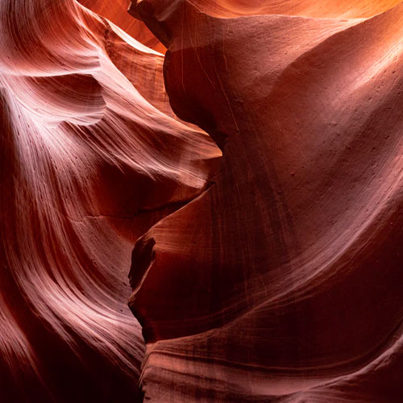

Tiny Tails Rescue Adelaide is a NFP giving neglected animals another chance. Run entirely by volunteers, our goal was to make their lives easier by making their website super easy to navigate, whilst highlighting all the awesome stuff they do. This lead to a focus on the 'Adopt', 'Volunteer' and 'Donate' pages.
| Budi | Rafa |


INSTAGRAM
LINKEDIN
BEHANCE
hello@emmahackett-design.com
© Emma Hackett Design